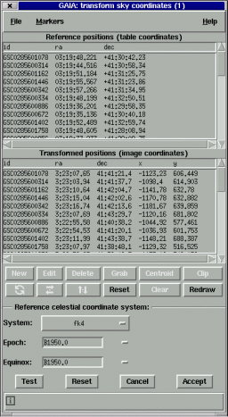

This window allows you to transform the set of coordinates shown in the upper window from one celestial coordinate system to the celestial coordinate system of the currently displayed image.
To use it enter the details about the coordinate system of the tabulated values in using the "System", "Epoch" and "Equinox" and press the "Test" button to see what effect the transformation to the image coordinates will have.
The lower table shows the new ra and dec positions (which can also be galactic coordinates) and what x and y values these correspond too on the image. If these x and y positions are visible then they will be shown as markers.
When you're happy with the transformation then press the "Accept" button to update the associated window, otherwise press "Cancel" if you don't want to accept the changes.